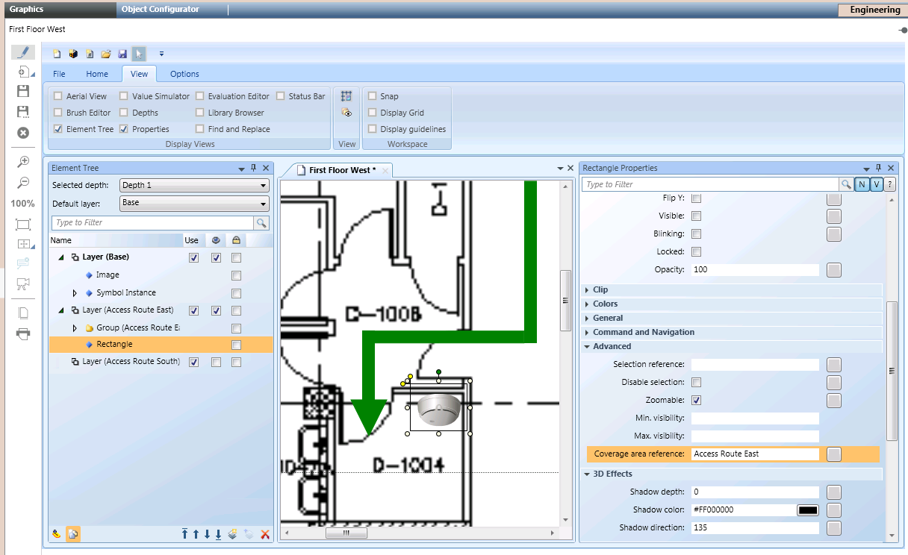
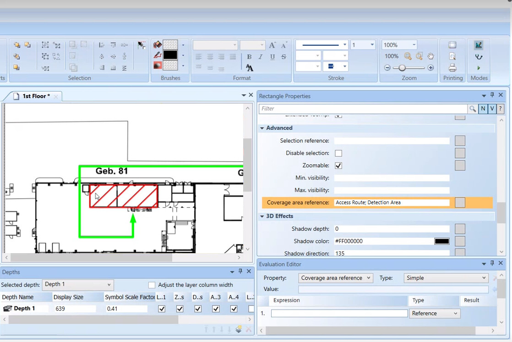

Access Route and Detection Area Layers via Coverage Areas
The fire brigade maps must contain access routes to the location where fire is detected and must be fought. To get the proper access route to each fire object in the fire brigade maps, you can configure dedicated layers in your graphic. These layers can include any useful graphical and textual elements, and you can set them as not visible so that they will only display in the Fire Brigade Maps extension.
You can then associate each access route layer to the corresponding fire objects by creating a rectangle around the object symbols and then entering the layer Description into the Coverage Area Reference property of the rectangle element. The bounding rectangles may be set as not visible, and they can be configured in any layer, typically in the access route layers.
The resulting fire brigade maps contain the access route layer that corresponds to the object of each map, whereas they do not contain the access route layers associated to other objects nor the bounding rectangles.

In the same way as the access route, you can associate the fire object with a layer that identifies the detection area. In the Coverage Area Reference property of the rectangle element, insert multiple elements separated by semicolon (for example: Access Route; Detection Area).
